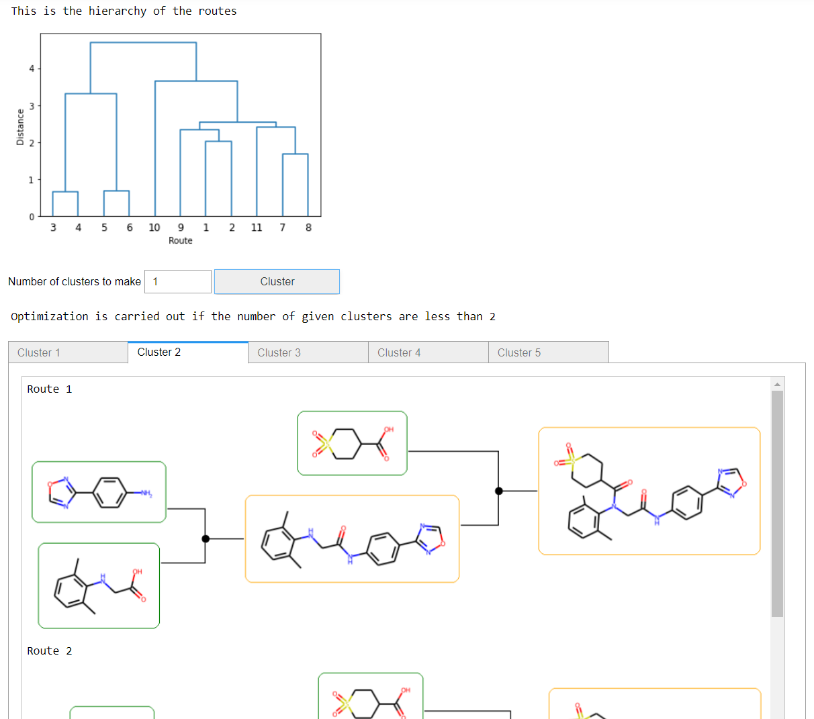

Graphical user interface¶
This tool to provide the possibility to perform the tree search on a single compound using a GUI through a Jupyter notebook. If you are unfamiliar with notebooks, you find some introduction here.
To bring up the notebook, use
jupyter notebook
and browse to an existing notebook or create a new one.
Add these lines to the first cell in the notebook.
from aizynthfinder.interfaces import AiZynthApp
app = AiZynthApp("/path/to/configfile.yaml")
where the AiZynthApp class needs to be instantiated with the path to a configuration file (see here).
To use the interface, follow these steps:
Executed the code in the cell (press
Ctrl+Enter) and a simple GUI will appearEnter the target SMILES and select stocks and policy model.
Press the
Run Searchbutton to perform the tree search.
Press the
Show Reactionsto see the top-ranked routes
You can also choose to select and sort the top-ranked routes based on another scoring function.
Creating the notebook¶
It is possible to create a notebook automatically with the aizynthapp tool
aizynthapp --config config_local.yml
which will also automatically opens up the created notebook.
Analysing the results¶
When the tree search has been finished. One can continue exploring the tree and extract output.
This is done by using the finder property of the app object. The finder holds a reference to an AiZynthFinder object.
finder = app.finder
stats = finder.extract_statistics()
Clustering¶
There is a GUI extension to perform clustering of the routes. Enter the following a new cell
%matplotlib inline
from aizynthfinder.interfaces.gui.clustering import ClusteringGui
ClusteringGui.from_app(app)
A GUI like this will be shown, where you see the hierarchy of the routes and then can select how many clusters you want to create.
